<!DOCTYPE html>
<html>
  <head>
    <title>Compressor HVAC: Service and Repair — 2011 BMW 128i Coupe (E82) L6-3.0L (N52K) Service Manual | Operation CHARM</title>
    <meta name='description' content="Detailed repair manual for the 2011 BMW 128i Coupe (E82) L6-3.0L (N52K).">
    <link rel='stylesheet' href="../style.css">
    <meta name='viewport' content='width=device-width, initial-scale=1.0' />
  </head>
  <body>
    <div class='theme-colors header'>
      <div class='branding'><b>Operation CHARM</b>: Car repair manuals for everyone.</div>
<div class=breadcrumbs><a class='breadcrumb-part' href="../">Home</a> <b>&gt;&gt;</b> <a class='breadcrumb-part' href="../BMW/">BMW</a> <b>&gt;&gt;</b> <a class='breadcrumb-part' href="../BMW/2011/">2011</a> <b>&gt;&gt;</b> <a class='breadcrumb-part' href="../index.html">128i Coupe (E82) L6-3.0L (N52K)</a> <b>&gt;&gt;</b> <a class='breadcrumb-part' href="0.html">Repair and Diagnosis</a> <b>&gt;&gt;</b> <a class='breadcrumb-part' href="0.html#Heating%20and%20Air%20Conditioning/">Heating and Air Conditioning</a> <b>&gt;&gt;</b> <a class='breadcrumb-part' href="1974.html">Compressor HVAC</a> <b>&gt;&gt;</b> <a class='breadcrumb-part' href="11348.html">Service and Repair</a></div></div>
<div class="theme-colors floaty-message lemon-message">
  <b style="font-size: 1.5em; color: gold">Manuals through 2025 now available!</b>
  <br><br>
  Our trusted friends have launched a new website named LEMON, which has newer manuals. It also contains all the CHARM manuals.
  <br><br>
  LEMON is the spiritual successor to  CHARM, I recommend you try it!
  <br><br>
  Link: <a style='white-space: nowrap' href="../missing-page">lemon-manuals.la</a> or <a style='white-space: nowrap' href="../missing-page">lemon-manuals.org.ua</a>
  <br><br>
  (Some people have issue connecting. LEMON is investigating. For now, use Firefox or change your DNS server)
  <br><br>
  Or, hide this message: <a href="../missing-page">temporarily</a> or <a href="../missing-page">permanently</a>
</div>
<div class='main'>
<h1>Compressor HVAC: Service and Repair</h1><br><br><b>64 52 ... Instructions For Compressor Replacement</b><br><br><b>Special tools required:</b><br><br><br><div class='oxe-image'></div><br><br><br><br><br><b>IMPORTANT:</b><br>Risk of damage.<br>Remove the compressor without damaging and without the use of force.<br><br><br><div class='oxe-image'></div><br><br><br><br><br><b>IMPORTANT:</b><br>Compressors with plastic belt pulleys:<br><span class='indent-2'>&#09;</span>-<span class='indent-5'>&#09;</span>Avoid impacts/knocks to plastic belt pulley (caused by tools, contact with base).<br><span class='indent-2'>&#09;</span>-<span class='indent-5'>&#09;</span>Return faulty compressors in their original packaging only.<br><br><b>IMPORTANT:</b><br>When starting up a new compressor for the first time, it is absolutely essential to carry out the following breaking-in procedure:<br><br><span class='indent-2'>&#09;</span>-<span class='indent-5'>&#09;</span><a href="0.html#Heating%20and%20Air%20Conditioning/">Heating and air conditioning</a> system off<br><span class='indent-2'>&#09;</span>-<span class='indent-5'>&#09;</span>Set all air vents in instrument panel to "OPEN"<br><span class='indent-2'>&#09;</span>-<span class='indent-5'>&#09;</span>Start engine and let it stabilize at idle speed<br><span class='indent-2'>&#09;</span>-<span class='indent-5'>&#09;</span>Set blower output to min. 75% of max. blower output<br><span class='indent-2'>&#09;</span>-<span class='indent-5'>&#09;</span>Switch on <a href="0.html#Heating%20and%20Air%20Conditioning/">heating and air conditioning</a> system and run for at least 2 minutes at idle speed (risk of damage at increased engine speed.)<br><br><br><div class='oxe-image'>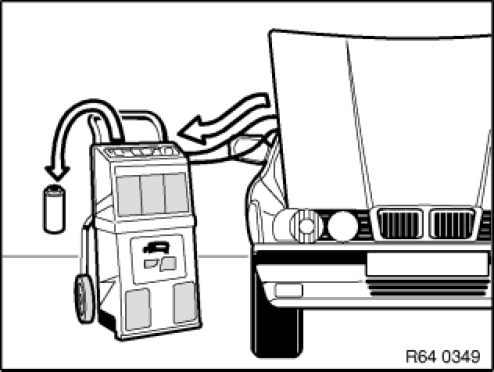</div><br><br><br><br><br>When evacuating the <a href="0.html#Heating%20and%20Air%20Conditioning/">heating and air conditioning</a> system, <a href="141.html">refrigerant</a> fluid is also extracted and collected in the oil separator of the A/C service station.<br><br>After evacuation, the <a href="141.html">refrigerant</a> must be filtered in the service station as the oil separator could still contain a liquid refrigerant/oil mixture. The cleaning operation gasifies the refrigerant completely and only the previously bound refrigerant fluid remains in the oil separator. Measure and note down this quantity of refrigerant fluid.<br><br>see Evacuating the <a href="0.html#Heating%20and%20Air%20Conditioning/">heating and air conditioning</a> system.<br><br><br><div class='oxe-image'>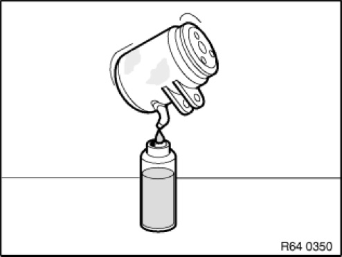</div><br><br><br><br><br>Transfer the <a href="141.html">refrigerant</a> fluid remaining in the previous compressor via the oil filler plug completely into a measuring cup.<br><br><br><div class='oxe-image'>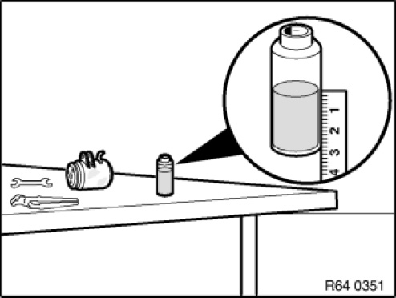</div><br><br><br><br><br>Measure the amount of <a href="141.html">refrigerant</a> fluid collected from the previous compressor.<br><br><br><div class='oxe-image'>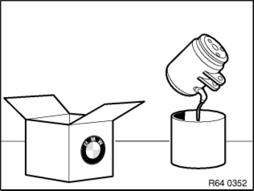</div><br><br><br><br><br>The new compressor is filled at the factory with <a href="141.html">refrigerant</a> fluid. Open oil filler plug and pour entire contents of compressor into a clean collecting vessel.<br><br>Installation note:<br>Replace sealing rings.<br>Use special tool 00 9 030 to mount sealing rings without damaging them.<br>Observe tightening torque, 64 52 2AZ.<br><br><br><div class='oxe-image'>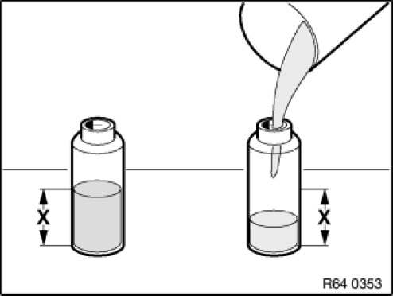</div><br><br><br><br><br>From the new compressor, pour the same amount of <a href="141.html">refrigerant</a> fluid (as drained from the previous compressor) +10 g extra into a clean measuring cup and pour again into the new compressor.<br><br>Remaining <a href="141.html">refrigerant</a> fluid can be poured into service station tank, see Evacuating the <a href="0.html#Heating%20and%20Air%20Conditioning/">heating and air conditioning</a> system.<br><br>Otherwise the excess <a href="141.html">refrigerant</a> fluid must be disposed of correctly.<br>On account of its hygroscopic properties, <a href="141.html">refrigerant</a> fluid must not be stored in open containers.<br><br><br><div class='oxe-image'>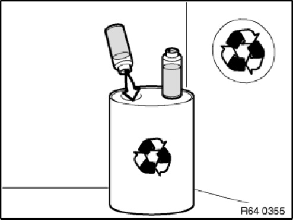</div><br><br><br><br><br>The <a href="141.html">refrigerant</a> fluid drawn off from the oil separator of the service station and from the previous compressor must not be reused and must be correctly disposed of.<br><br><br><div class='oxe-image'>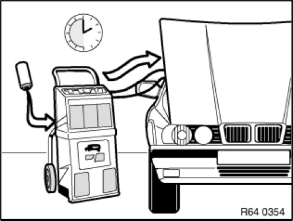</div><br><br><br><br><br>After installing the new compressor, it is essential before filling the <a href="0.html#Heating%20and%20Air%20Conditioning/">heating and air conditioning</a> system to pour the same amount of the previously drawn off <a href="141.html">refrigerant</a> fluid into the system again, see Evacuating the heating and air conditioning system.<br><br><br><div class='oxe-image'></div><br><br><br><br><br>Installation note:<br>If the <a href="141.html">refrigerant</a> circuit is open for longer than 24 hours: Replace drier bottle/drier insert.<br><br><br><h3>��:</h3><div class='oxe-image'>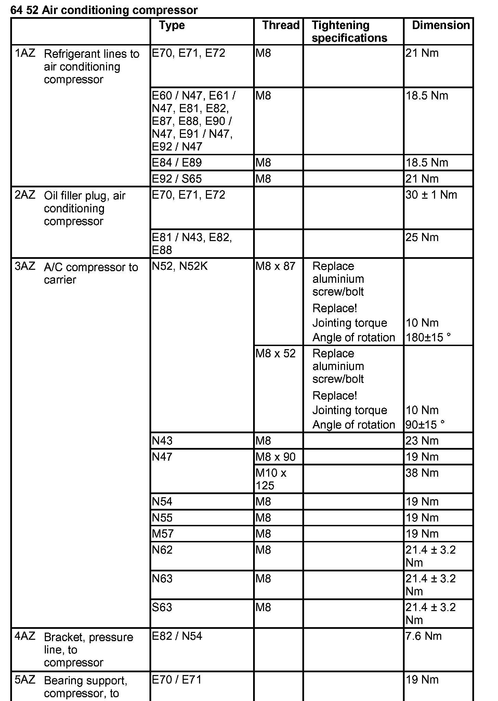</div><br><br><br><br><br><h3>�K�:</h3><div class='oxe-image'>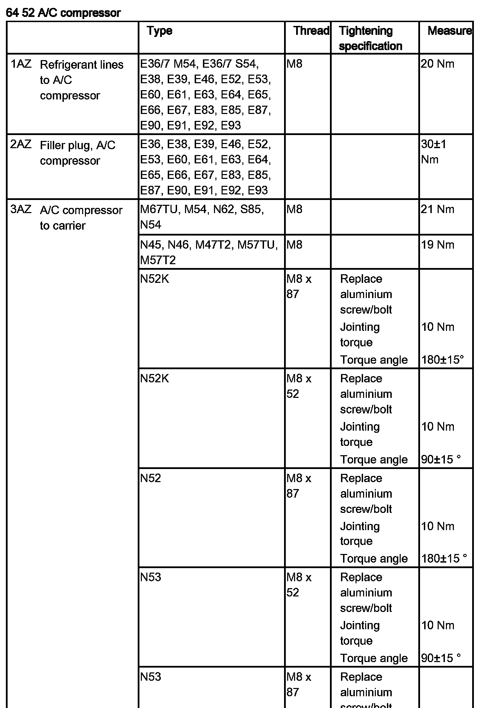</div><br><br><br><br><br><div class='oxe-image'>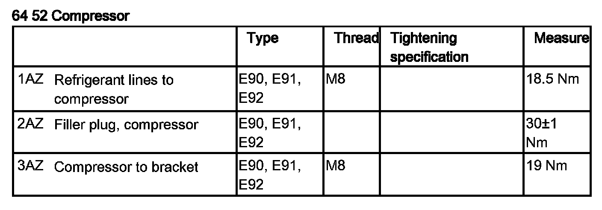</div><br><br><br><br><br><div class='oxe-image'>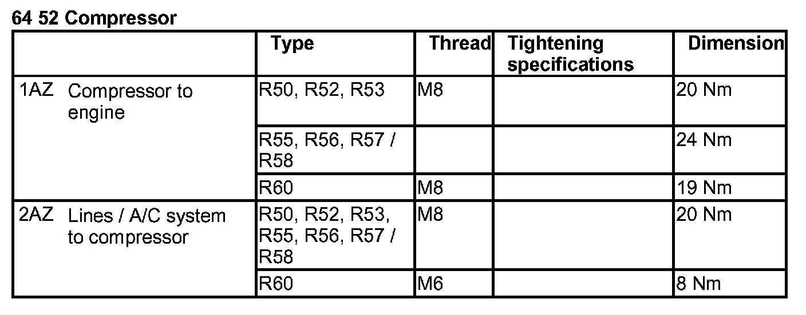</div><br><br><br><br></div>
<div class="theme-colors footer">
  <i>pro multis</i> · <a href="../about.html">About Operation CHARM</a>
</div>
<script src="../script.js"></script>
</body>
</html>
